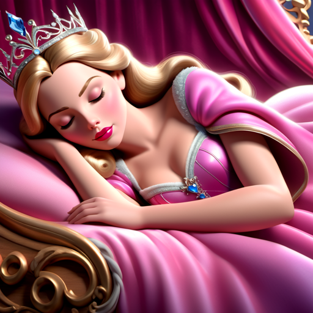

Info-
"Doornroosje," oorspronkelijk geschreven door Charles Perrault, vertelt het verhaal van een prinses die d
oor een boze fee is vervloekt. De fee voorspelt dat de prinses, Aurora genaamd, zich op haar
zestiende verjaardag aan een spinnewiel zal prikken en zal sterven. Een goede fee verzacht de vloek
door te voorspellen dat Aurora in een diepe slaap zal vallen in plaats van te sterven.
In een poging om Aurora te beschermen, sluit de koning alle spinnewielen uit het koninkrijk en
laat de prinses in afzondering opgroeien. Op haar zestiende verjaardag ontdekt Aurora echter een
verborgen spinnewiel in het kasteel en prikt zichzelf per ongeluk. Ze valt in een diepe slaap, en het
hele koninkrijk valt met haar in slaap.
Een goede fee brengt een prins naar het kasteel, waar hij de slapende prinses kust. Deze kus doorbreekt
de betovering, wekt Aurora en het hele koninkrijk weer tot leven. Het verhaal benadrukt de kracht
van ware liefde en het overwinnen van obstakels door opoffering en moed.
De film is uitgekomen in 1959 op 29 januari.
Het bekendste nummer is: Ik ken jou
